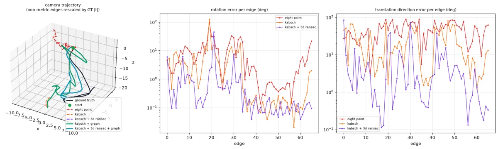

Computer vision · Machine learning
Learned Visual Pose
I’m building a visual pose pipeline that starts with image correspondences and estimates how the camera moved. I wrote the C++ geometry backend, rendered training data, and built PyTorch models for matching and graph optimization.
Pose derivation and C++ geometry
I implemented SO(3) and SE(3) operations in C++ and Eigen. For a metric pose, the pipeline back-projects matched pixels using their depth, then uses RANSAC and Kabsch to fit the rigid transform. I also implemented an essential-matrix branch for monocular pose up to scale.
I derived the pose-graph residual and its analytic Jacobians for left-multiplicative updates. The logarithm maps each edge’s pose error into a six-dimensional tangent vector. The optimizer assembles the Gauss–Newton system from those Jacobians, edge information matrices, and Huber weights.
rij = Log(Zij−1 Ti−1 Tj)
Ti ← Exp(δξi) Ti
Jj = Jr(rij)−1 Ad(Tj−1), Ji = −Jj
Ti and Tj are camera-to-world poses. The measured transform Zij maps frame j into frame i, and the adjoint carries pose perturbations into the residual’s coordinate frame.
Rendering and correspondence training
RGB-D dataset rendering
I built a Habitat-Sim renderer that plans camera walks on HM3D navigation meshes. It records synchronized RGB, metric depth, and ground-truth poses, then prepares keyframes and shared-visibility labels for graph training.
Convolutional descriptors
I trained a dilated CNN to produce normalized 128-dimensional descriptors. TartanAir depth and poses provide same-point labels across views. A symmetric InfoNCE loss trains the descriptors to distinguish true matches from other points in the image pair.
Transformer experiments
I trained a pose-graph refiner on noisy trajectories using pose and measurement tokens, 3D geometry, and visual features. It predicts pose corrections in SE(3). My current experiments train a graph-generation Transformer to learn correspondence and relative-pose measurements from RGB-D keyframes with supervision through a differentiable Gauss–Newton solve.
Evaluation
- 70.74%
- CNN matches within 8 pixels versus 58.20% for SIFT on one held-out TartanAir sequence.
- 48% lower
- Mean trajectory error versus robust Gauss–Newton in a separate Transformer experiment on 100 validation graphs with injected faults.


